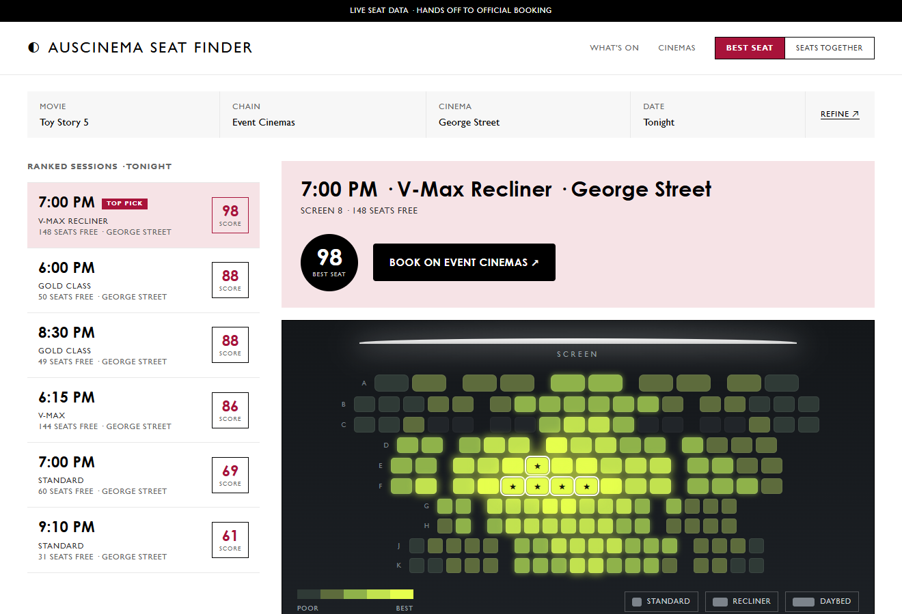

Product · UI exploration
AusCinema Seat Finder scores real auditorium seats and hands users off to official booking. This page shows how I explored seven UI directions using real data and design systems extracted from live brands — then converged on one.

Cinema seat maps tell you what's free. They don't tell you which free seat is actually worth sitting in.
Centre, right distance from the screen, the right class (recliner / Gold / Vmax) — that judgement is left entirely to the user.
The app scores seats and hands off to the official booking path. No payment handling, no account, no replacing the cinema's flow.
Each direction is the same product on the same data (Toy Story 5 / Event George St / 6 sessions), so the only variable is design. They draw on three kinds of input.
Directions designed from first principles for the task, no external reference.
Tokens (type, colour, motion, layout) pulled from live sites with Playwright, then diverged for product fit — reference-system extraction, not copying.
Real captured seat geometry, classes and status, scored by the project's own model and rendered as a layout — not a synthetic grid.
Scored 1–5 against the decision criteria. The point isn't that G wins everything — it's where the trade-offs land for a product whose job is trust in a seat score.
| Criterion | A Transit | C Terminal | D Cinematic | E Glossier | G Hybrid |
|---|---|---|---|---|---|
| Seat legibility | 3 | 3 | 4 | 3 | 5 |
| Trust in score | 3 | 4 | 3 | 3 | 5 |
| Mobile viability | 4 | 2 | 2 | 4 | 4 |
| Booking handoff clarity | 3 | 3 | 2 | 4 | 5 |
| Visual distinctiveness | 3 | 4 | 5 | 3 | 4 |
| Implementation cost (5 = cheap) | 4 | 3 | 2 | 4 | 3 |
A curated deck, not an equal-weight grid. Drag it, or use the arrows. Open the live interactive gallery ↗
The recommended direction doesn't render a decorative grid. It renders a real captured auditorium — geometry, seat classes and status pulled through the project's own chain adapters and scored by its own model.
Why it matters: it makes a backend / AI builder credible in design — the interface is the output of a system that actually behaves, not a theme.